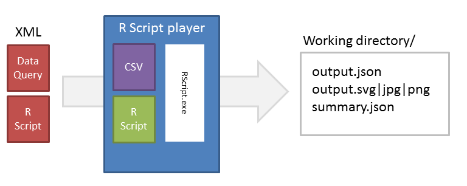

R Statistical Computing¶
Architecture¶
La class Core_Library_RScriptPlayer sert à exécuter un script “R”: elle prend en entrée un script au format
Core_Library_Resource_R, ainsi qu’une source de données, qui peut être une instance de type Core_Library_Resource_XML_DataQuery,
Core_Library_Resource_XML_DataSet ou Core_Library_Resource_JSON.
$oRPlayer = Core_Library_RScriptPlayer::GetInstance();
$sWorkingDirectory = $oRPlayer->Play( array(
'script' => $oRScript, // Core_Library_Resource_R
'data_source' => $oDataQuery // Core_Library_Resource_XML_DataQuery | Core_Library_Resource_XML_DataSet | Core_Library_Resource_JSON
));
Les ressources contenant le script et la source de données sont transformées (la source de données en fichier CSV) et passées à R (via l’executable Rscript). R génère ensuite dans un répertoire de travail les fichiers décrits dans le script.
Chemin de l’executable RScript dans voozanoo.ini:
voozanoo.executable.r = "C:\Program Files\R\R-3.0.2\bin\Rscript.exe"
Le module R player (mainframe/index/one/dp/r_player_index) permet, via une interface, de lancer un script en choisissant un script et une
source de données de type dataquery.
Le module va tenter d’afficher les fichiers générés dans le répertoire de travail en fonction de leurs noms.
Ainsi s’il trouve un fichier nommé output.json,
formaté correctement (voir l’exemple ci-dessous pour le formatage),
il l’affichera (dans un tableau). Idem s’il trouve une image nommée output.svg (les formats png et jpeg sont aussi supportés).
En l’abence de tous ces fichiers, le module renvoi le contenu du répertoire de travail dans un fichier zip.
Il est possible d’afficher le résultat de la commande summary qui sert à obtenir des informations sur les données du data source dans
le but de contrôler la cohérence des données ayant servies pour l’analyse.
Il suffit de mettre le résultat de la commande dans un fichier nommé summary.json via la commande ci-dessous.
summary_file_path = paste(args[1], 'summary.json',sep='/')
summary_result <- toJSON(summary(T))
# Indication de l'encodage du fichier, qui serait par défaut en latin1
con <- file( summary_file_path, encoding="UTF-8" )
write( summary_result, file=con )
Exemple de script R¶
##############################################################
# chargement des librairies nécessaires pour graphiques et tableaux
library(RJSONIO)
# Lecture de la source de données, cette partie ne doit pas être modifiée
args <- commandArgs(TRUE)
setwd(args[1])
T <- read.csv(file=args[2],head=TRUE,sep=";",fileEncoding="UTF-8")
##########
# Analyse
# Analyses sur la source de données (en l'occurence sur la variable age)
variable1 = eval(parse(text = paste('T$',"Age", sep='')))
variable2 = variable1 + rnorm(1,0,1)
R1 <- as.numeric(quantile(variable1, na.rm=TRUE, names=FALSE))
R2 <- as.numeric(quantile(variable2, na.rm=TRUE, names=FALSE))
# Création du fichier output.json qui sera affiché
# (args[1] est le chemin vers le répertoire de travail)
outpath = paste( args[1], 'output.json', sep='/' )
# Structure du fichier, doit toujours être la même pour pouvoir être
# affichée par le module R de Voozanoo4
TITLE <- "Essai tableau plusieurs lignes"
# Libellés des colonnes
CLABELS <- c("Min","Q1", "Mediane", "Q3", "Max")
# Libellés des lignes
LLABELS <- c("A","B")
DATA <- as.list(data.frame(R1,R2))
# Ecriture du fichier dans le répertoire de travail
output <- toJSON(list(E_TITLE = TITLE,E_CLABELS = CLABELS,E_LLABELS =
LLABELS,E_DATA =DATA))
write(output, outpath);
#########################
# Création d'un graphique
# Titre
Title <- paste( "Mediane et quantiles pour age" )
# Nom et type du fichier généré
jpeg( file="output.jpg" )
# PARTIE GRAPHIQUE
# que veut-on faire des variables ? Ici débute la partie graphique / analyse
boxplot(variable1, main=Title, col='#99ff99', border='#009900')
# fermeture du graphique
dev.off()
#########################
# Création du summary
summary_file_path = paste(args[1], 'summary.json',sep='/')
summary_result <- toJSON(summary(T))
# Indication de l'encodage du fichier, qui serait par défaut en latin1
con <- file( summary_file_path, encoding="UTF-8" )
write( summary_result, file=con )